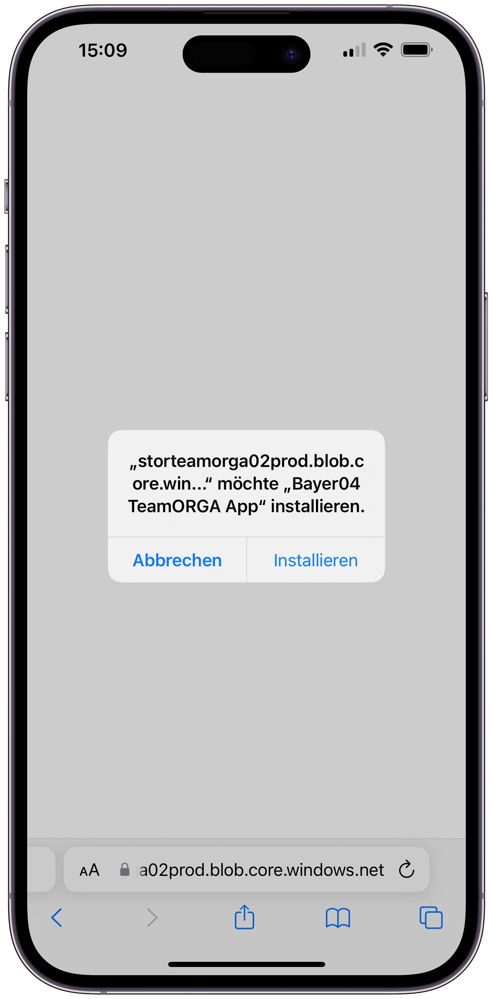

zurück
zurück
Mit der Chat-Funktion kannst du mit einzelnen Team-Kameraden oder in Gruppenchats kommunizieren. Du findest den Chat auf dem Handy unter dem Reiter „Chat“ unten rechts oder mit einem Aufruf des Seitenmenüs.

In der Desktop-Version siehst du den Chat auf dem Dashboard auf der linken Seite des Bildschirms. Auch hier hast du die Möglichkeit, die Funktion über das Seitenmenü aufzurufen.

Klickst du auf den linken der beiden Buttons, erstellst du einen Gruppenchat. Hier kannst du die Gruppe zunächst anhand der definierten Team-Gruppen und -Rollen erstellen. Dafür wählst du einfach eine oder mehrere der Möglichkeiten aus.

Alternativ kannst du auch mit individuellen Nutzern eine Gruppe erstellen. Wähle dazu unten den Reiter „Individuell“ aus. Hier kannst du jetzt mehrere Mitglieder auswählen und zur Gruppe hinzufügen. Auch eine gemischte Auswahl aus der Gruppen-/Rollen-Auswahl und einer individuellen Auswahl ist möglich. Du bestätigst die Auswahl, indem du auf den Haken klickst.

Jetzt kannst du der Gruppe noch einen Namen geben. Mit „Ok“ erstellst du die Gruppe. Im Anschluss fin-dest du die Gruppe in der Chat-Übersicht.

Mit dem rechten der beiden Buttons oben rechts erstellst du einen Einzelchat. Hier siehst du die Liste aller Mitglieder und kannst jetzt auswählen, mit wem du chatten möchtest. Bestätige die Auswahl mit dem Haken. Jetzt landest du sofort in dem Chatraum mit der ausgewählten Person.
Diese Funktionen sind sowohl auf dem Handy als auch in der Desktop-Variante verfügbar. Diese Anlei-tung gilt für beide Varianten.